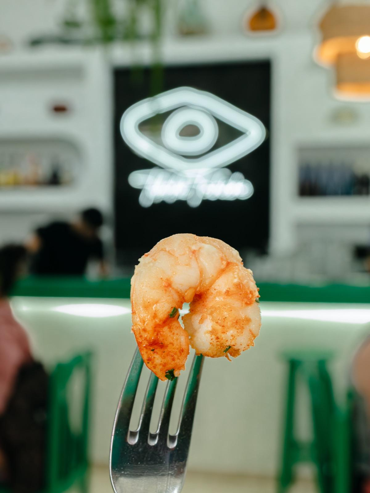
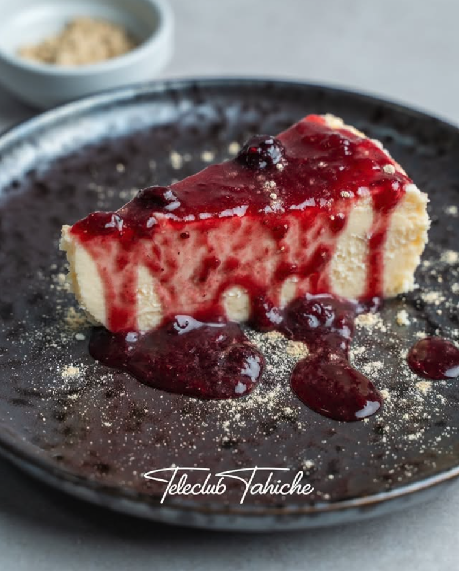
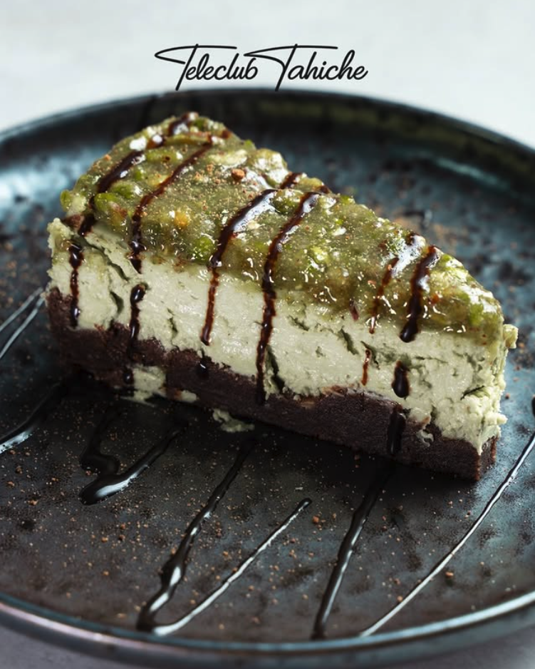
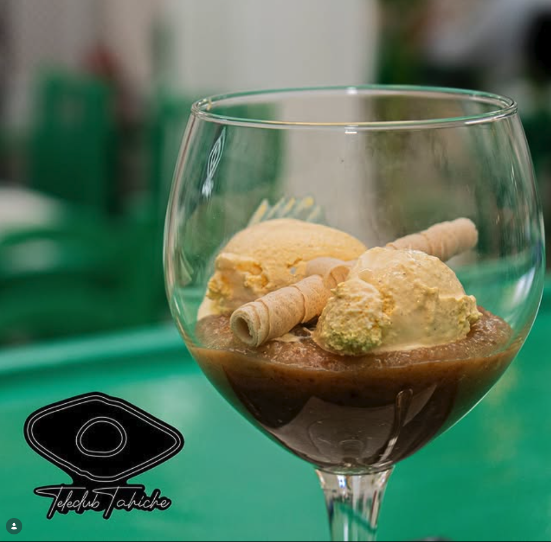

Plato estrella

Gambas al ajillo
12,00 €De la lonja de Arrecife. Aceite, ajo crujiente, guindilla y pan tostado para mojar.
Producto local, recetas honestas. La carta cambia con lo que llega de la lonja y la huerta. Pregunta al camarero por la pizarra del día — ahí están las sorpresas.
Tapas honestas, para compartir y abrir boca. La mayoría salen calientes de la cocina; algunas frías de la nevera. Pídete varias y reparte.

De la lonja de Arrecife. Aceite, ajo crujiente, guindilla y pan tostado para mojar.
Las de toda la vida. Mojo rojo y verde de la casa, con comino y cilantro.
De cabra, a la plancha, con mojo de palmera y tostas de pan negro.
Cremosas por dentro, doradas por fuera. Rebozadas a mano, 6 unidades.
Aliñadas con comino, ajo, hierbas y aceite local de oliva.
Tres quesos de la isla, mermelada de higo, pan de la abuela y nueces.
Pescado fresco del día, llegado por la mañana de la lonja de Arrecife. Si te apetece algo en concreto, pregunta — la pizarra cambia con la marea.
Pescado del día con papas arrugadas y mojo verde. Como manda la tradición.
Con cebolla pochada, perejil y lima de la huerta del vecino.
Receta de la abuela María. Jugoso por dentro, cebolla muy lenta.
Con mojo verde y ajo tostado. Algo muy isleño, para los valientes.
Sobre puré de batata y aceite de pimentón ahumado de La Vera.
Guiso marinero con cebolla, pimiento, vino blanco y azafrán de Mancha.
Cocina canaria de cuchara, a fuego lento. Carnes de productores de la isla, ninguna prisa.
Marinado 24 horas en vino, pimentón y ajo. Guisado muy lento.
12 horas a fuego bajo, con miel de palma y batata asada al horno.
Con costilla de cerdo, chorizo y verduras de la huerta.
Garbanzos, carne deshilachada y patatas. Como Dios manda.
De ternera local, salsa de pimienta verde y papas paja.
Asado entero con mojo palmero, romero y vino malvasía.
Verduras de productores ecológicos de Tahiche, Tao y Mozaga. Cosecha de la semana — preguntar al camarero.
Tomate, lechuga, aguacate, queso fresco y vinagreta de miel de palma.
Con setas, espárragos verdes y queso de cabra fundido.
Con tahini de la casa, semillas tostadas y hojas de la huerta.
Caldo verde con piña, judías, calabaza y pella de gofio.
Postres tradicionales hechos en casa cada mañana. Pequeños — para dejar sitio al café.

Cremosa, ligeramente ahumada con queso de Uga, coulis de frutos rojos y gofio espolvoreado.

Cremosa de pistacho sobre base de brownie, con sirope de chocolate. Piñón verde por encima.
Brownie de chocolate negro húmeco por dentro, con helado de vainilla y nueces caramelizadas.

Receta tradicional canaria de almendra, miel y limón. Servido en copa con helado y barquillos.
Vinos volcánicos de la isla, cervezas tiradas con cariño y cócteles honestos. Pregunta al camarero por la copa del día.
Blanco seco de La Geria. Copa o botella. Mineral, fresco.
Tirada con cariño, muy fría. La de toda la vida.
Hierbabuena fresca del huerto, ron blanco, lima y azúcar moreno.
Canario de toda la vida. Con hielo, lima y una pizca de canela.
Listán negro de la isla, tinto joven con cuerpo. Copa o botella.
Tinto local, fruta de temporada y un toque de ron miel. Jarra para compartir.
Cafés canarios, infusiones de la huerta y digestivos isleños. La sobremesa es sagrada — tómate tu tiempo.
El café canario por excelencia: leche condensada, Licor 43, espresso, lima y canela.
Espresso, leche condensada abajo, leche caliente arriba. Clásico de barra.
Receta de la casa con miel de palma, ron y limón.
Hierbabuena, manzanilla y tomillo recién cortado de detrás de la cocina.
Avísanos siempre de alergias e intolerancias — adaptamos lo que podemos. IVA incluido. Carta orientativa, los platos pueden variar según temporada.
Reserva online en treinta segundos. Si vienes con grupo grande (+6), mejor llámanos al +34 628 33 26 08.